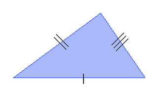
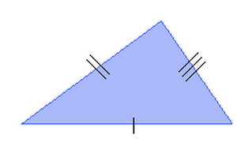
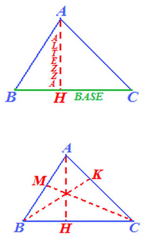

Poligoni
- ....
Antonio Pierro @antonio_pierro_
Per consigli, suggerimenti, eventuali errori o altro potete scrivere una email a antonio.pierro[at]gmail.com
Definizione di Poligono.

- Una figura piana è detta poligono quando è intersezione di semipiani.
- Tra i punti di intersezione delle rette che delimitano tali semipiani, quelli che appartengono al poligono si dicono VERTICI del poligono.
- I segmenti di tali rette che congiungono due vertici si dicono lati del poligono.
Lati/vertici consecutivi
- In un poligono, si dicono lati consecutivi due lati che hanno un vertice in comune
- In un poligono, si dicono vertici consecutivi due estremi di uno stesso lato
Perimetro
- Si chiama perimetro di un poligono la somma delle lunghezze dei suoi lati.
Diagonale
- Si dice DIAGONALE di un poligono, ogni SEGMENTO che UNISCE DUE dei suoi VERTICI NON CONSECUTIVI.
Teorema 1
- Un poligono con n lati ha \(\frac{n(n-3)}{2}\) diagonali
- La somma degli angoli di un poligono misura 180(n-2) gradi
Teorema 2 - criterio di congruenza
- Due poligoni sono congruenti se e solo se hanno angoli e lati ordinatamente congruenti
Definizione - Poligoni simili
- Due poligoni sono simili quando hanno (ordinatamente) angoli congruenti e lati proporzionali.

Definizione - Poligoni regolari
- Un poligono si dice regolare quando ha lati ed angoli tutti congruenti tra loro.
- Tutti i poligoni regolari con lo stesso numero di lati sono simili.
- Due poligoni regolari con lo stesso numero di lati sono congruenti se e solo se hanno la stessa area
Trinagolo

- Il TRIANGOLO è un POLIGONO che ha TRE LATI e TRE ANGOLI
- Un LATO e un ANGOLO del triangolo si dicono OPPOSTI se il VERTICE dell'angolo NON APPARTIENE AL LATO CONSIDERATO
- L'angolo \(\alpha\) è OPPOSTO al lato CB;
- Il lato AB è ADIACENTE agli angoli \(\alpha\) e \(\beta\);
Caratteristiche dei triangoli
- OGNI LATO è sempre MINORE della SOMMA DEGLI ALTRI DUE.
- OGNI LATO è sempre MAGGIORE della DIFFERENZA DEGLI ALTRI DUE.
- La SOMMA degli ANGOLI INTERNI del TRIANGOLO misura 180°
Classificazione dei triangoli 1/2
- Il triangolo con tutti e TRE LATI CONGRUENTI, cioè aventi la stessa lunghezza, si dice EQUILATERO. (Ampiezza di un angolo del triangolo equilatero = 180° : 3 = 60°)
- Il triangolo con DUE LATI CONGRUENTI, cioè aventi la stessa lunghezza, si dice ISOSCELE.
- Il triangolo che ha TRE LATI DISUGUALI, cioè aventi tutti diversa lunghezza, si dice SCALENO.
 

Classificazione dei triangoli 2/2
- Secondo gli ANGOLI i TRIANGOLI possono essere classificati in:
- Il triangolo che ha un ANGOLO RETTO si dice TRIANGOLO RETTANGOLO.
- Il triangolo con tutti e TRE gli ANGOLI ACUTI si dice TRIANGOLO ACUTANGOLO.
- Il triangolo che ha un ANGOLO OTTUSO si dice TRIANGOLO OTTUSANGOLO.
Elementi notevoli di un triangolo
- Gli ELEMENTI NOTEVOLI di un triangolo sono:
- Altezze
- Mediane
- Bisettrici
- Assi
Altezze di un triangolo

- Disegniamo il segmento AH che parte dal vertice A e interseca, perpendicolarmente, il lato opposto BC
- Il segmento AH si dice ALTEZZA del triangolo relativa al lato BC.
- Il punto H si chiama PIEDE dell'ALTEZZA.
- Mentre il lato BC è la BASE del triangolo.
- l'ALTEZZA di un triangolo rispetto ad un suo lato, che in questo caso prende il nome di BASE, è la DISTANZA di questo LATO dal VERTICE OPPOSTO.
- Poiché il triangolo ha TRE LATI, ognuno di essi può essere considerato come BASE del triangolo.
Punti notevoli di un triangolo
- I PUNTI NOTEVOLI di un triangolo sono:
- l'ORTOCENTRO;
- il BARICENTRO;
- l'INCENTRO;
- il CIRCOCENTRO.
Ortocentro di un triangolo

- l'ORTOCENTRO è il PUNTO in cui si INCONTRANO le ALTEZZE di un triangolo.
- Se il triangolo è ACUTANGOLO l'ORTOCENTRO è INTERNO al triangolo
- Se il TRIANGOLO è RETTANGOLO l'ORTOCENTRO COINCIDE con il VERTICE DELL'ANGOLO RETTO.
- Se il TRIANGOLO è OTTUSANGOLO l'ORTOCENTRO è ESTERNO al triangolo.